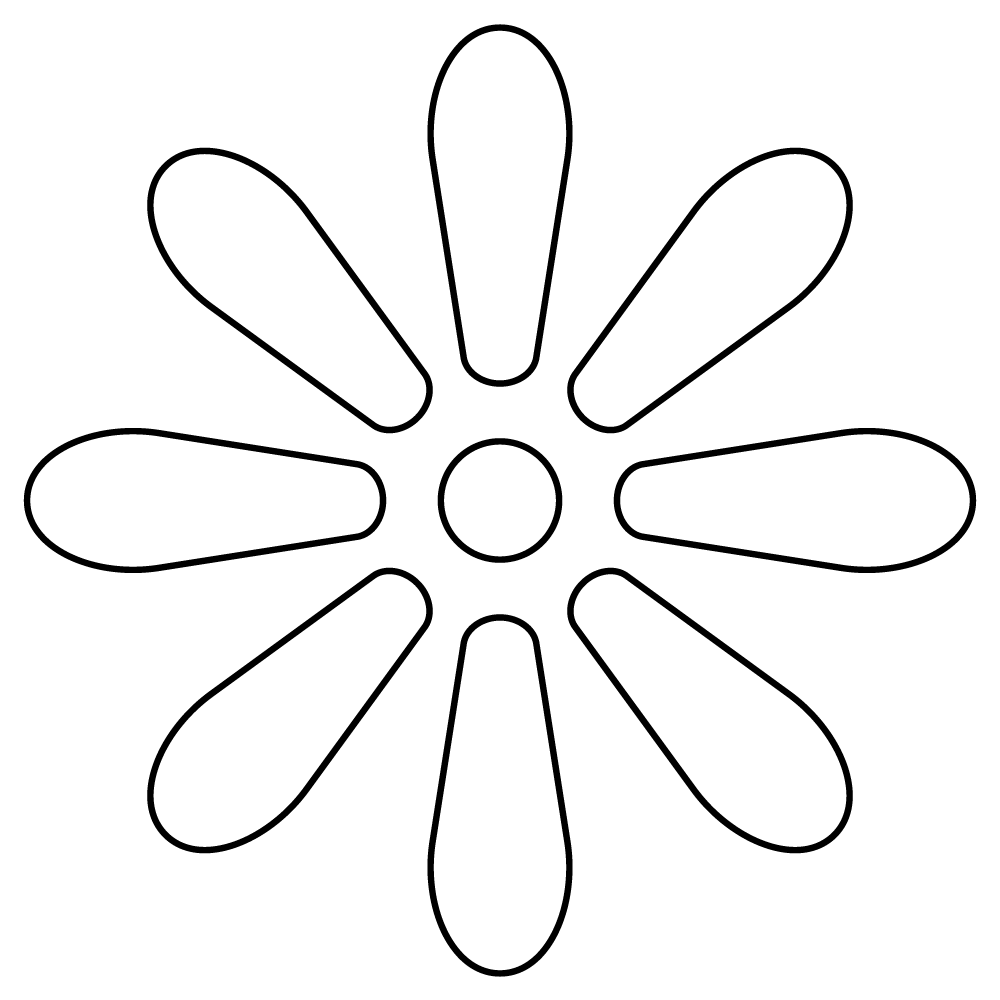
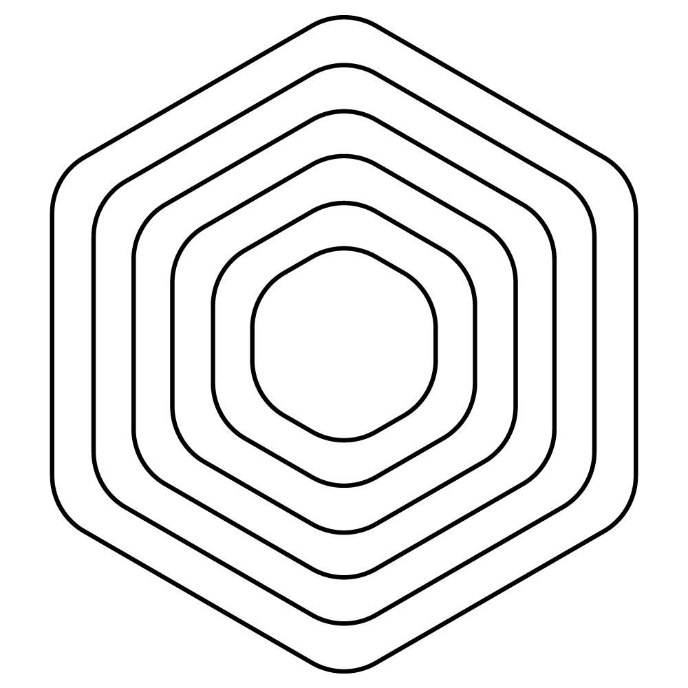
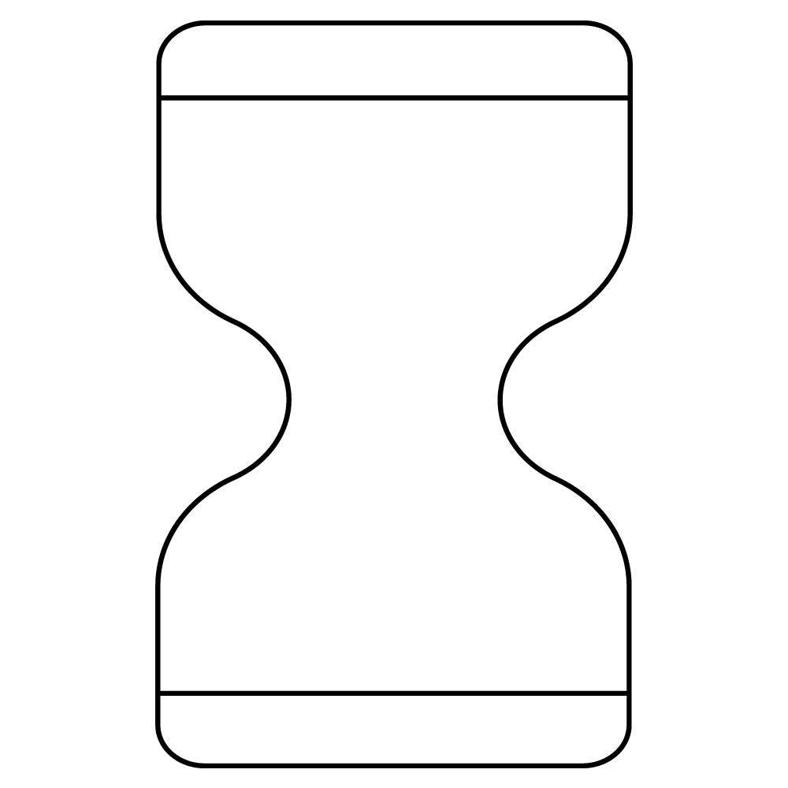
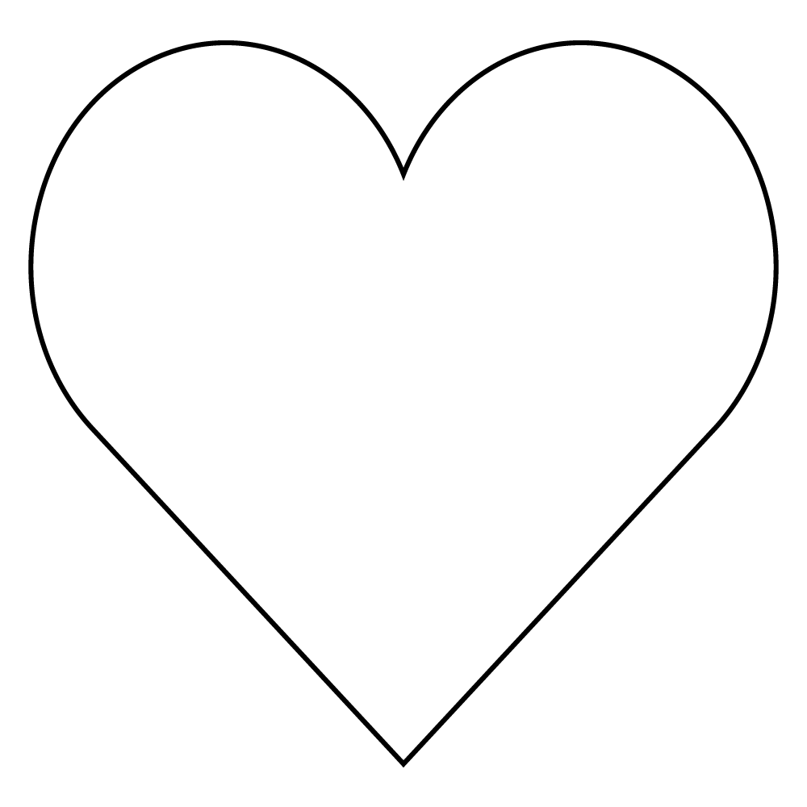
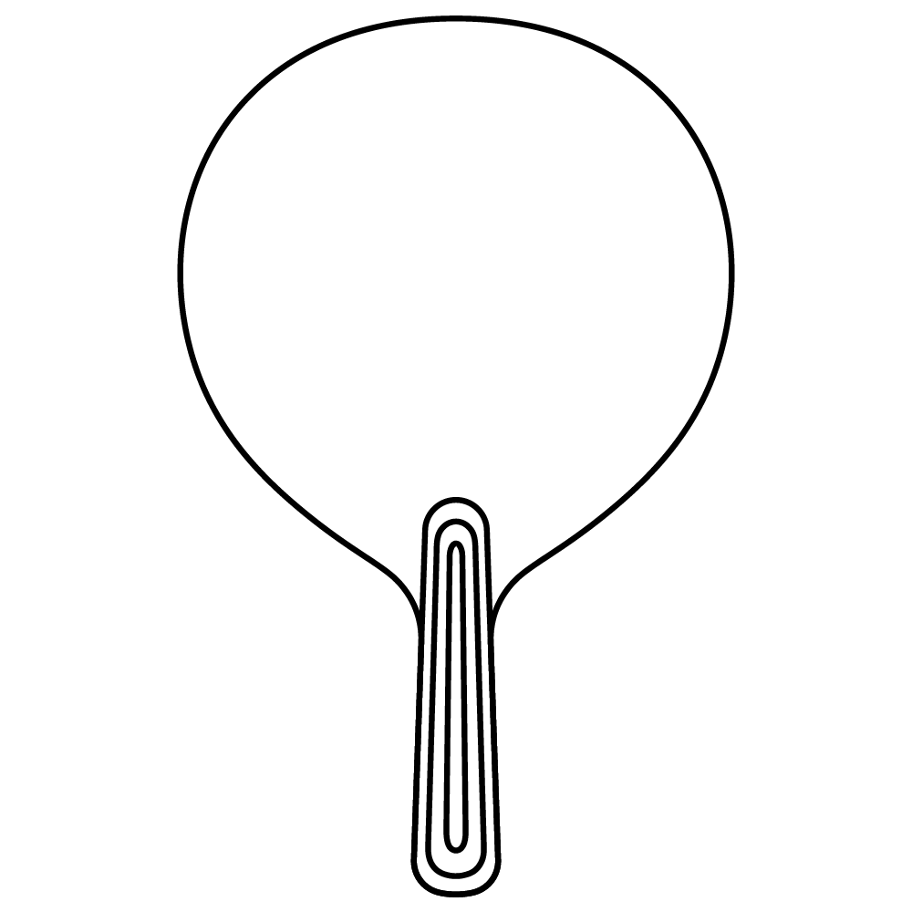
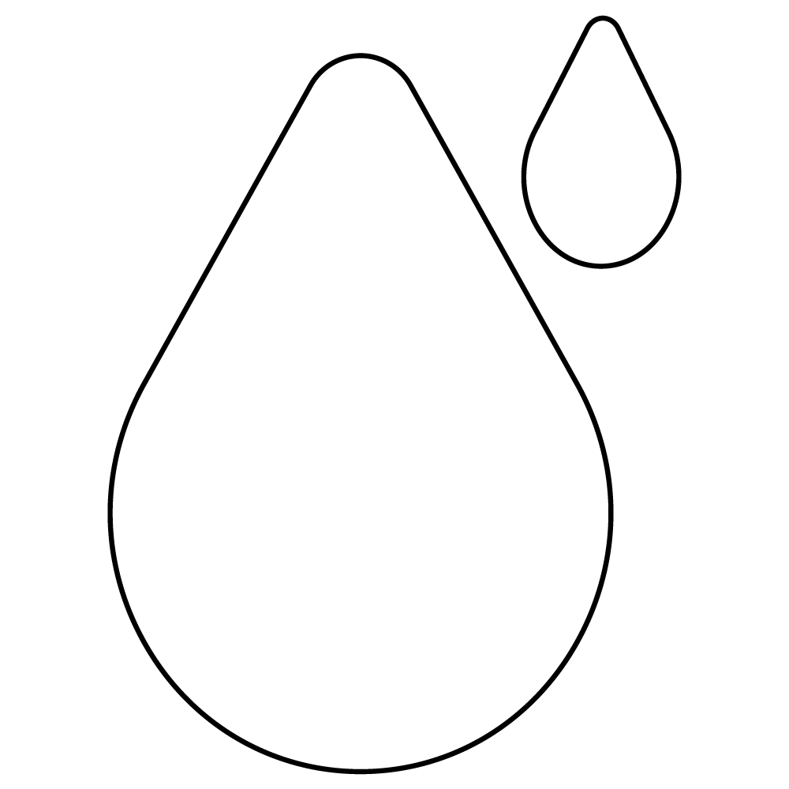
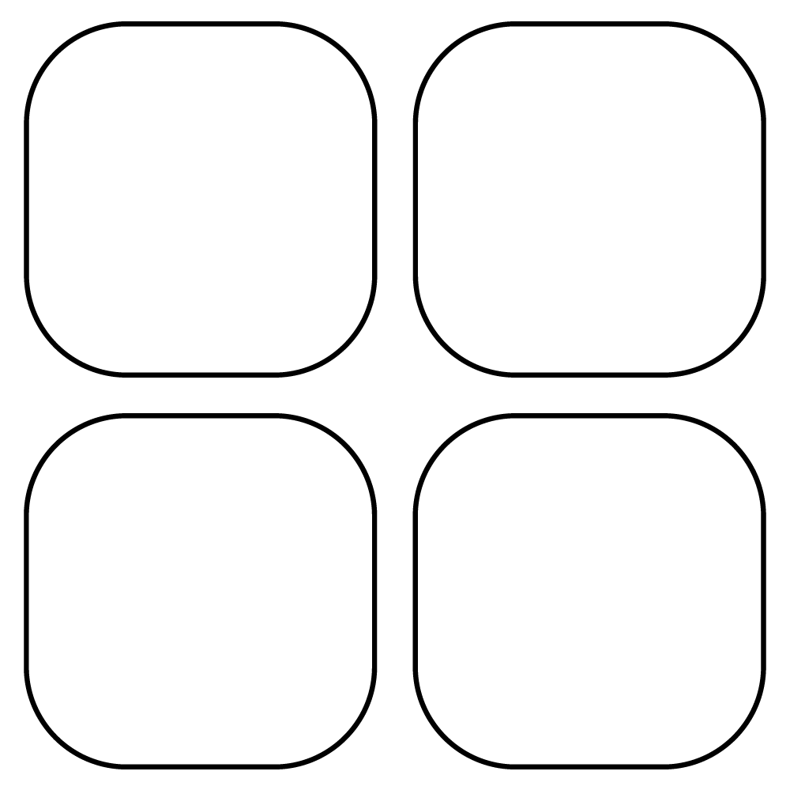
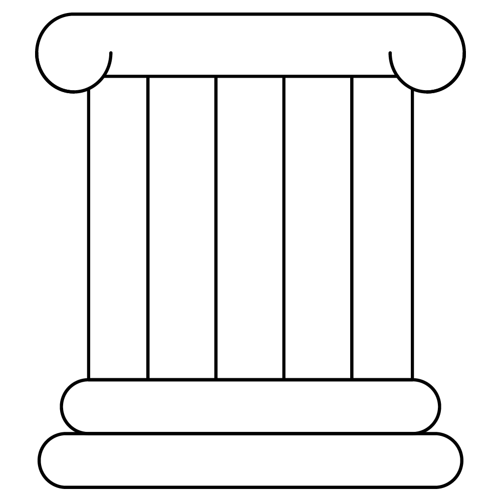

— 01 / Source
Source
FSC-certified veneers selected by hand. Walnut, ash, oak, cherry, sapelli — one tree, many paddles.
Hand-crafted wooden paddles for the sea. Sustainable materials, timeless silhouettes, and the quiet pleasure of a long afternoon between waves and shade.
AVORA was born by the sea, where afternoons stretch long and the only sound that matters is the soft thud of wood on a ball. Each paddle is a small ritual: the workshop, the water, the people.
We make beach paddles the way they have always been made in the Mediterranean — by hand, in small batches, from materials chosen to endure.
Our workshop sits an hour from the coast in Valencia. Wooden veneers — walnut, ash, oak — are pressed into curves, cut, sanded, and finished with water-based lacquer. Every paddle passes through ten pairs of hands before it sees the sand. Nothing is rushed. Nothing is wasted.
We believe in objects that grow softer, lovelier, more yours with use. A paddle that ages with you. A reason to put down your phone, walk to the water, and play.

FSC-certified veneers, recycled cork handles, water-based finishes. Packaging is paper and string.

Each piece is shaped, sanded and inspected by hand. Small batches, real makers, no shortcuts.

Multi-ply curved laminate, marine-grade adhesives, finishes that handle salt, sun and sand.

More than equipment — a small invitation to leave the noise behind and meet someone across the sand.
From the natural grain of the Original to the colour-blocked forms of Essence and the playful proportions of Kids — every AVORA paddle shares the same honest construction.
Our genuine collection, designed by CULDESAC. Manufactured with sustainable premium finishes — natural wood veneers and Fenix® anti-scratch laminates — assembled and checked, detail by detail, in our own workshop.
Inspired by blazing Mediterranean sunsets. A new colour palette paired with our recycled cork handle. Made to enjoy at any time, anywhere — #disconnecttoreconnect.
The best way for a child to release their energy is through play. A soft palette for the little ones — wooden bats with our recycled cork handle, paired with soft foam balls. Let the fun begin.
AVORA partners with hotels, resorts and lifestyle brands across the Mediterranean to create custom paddles — engraved, painted, or built around a bespoke palette. A guest gift that doesn't get left in the room.
Every AVORA paddle moves through the same four-stage process — from raw veneer to sealed surface — in our workshop in Valencia. Roughly two days of work; a lifetime of summers.
FSC-certified veneers selected by hand. Walnut, ash, oak, cherry, sapelli — one tree, many paddles.
Layers pressed into a curved mould, cured overnight, then CNC-cut to silhouette and stacked to rest.
Hand-sanded through three grits until the edges feel right. Recycled cork handle wrapped and pinned.
Water-based lacquer in three thin coats. Inspected, signed, packed in paper. Off to the sea.
A paddle that ages with you.
A reason to put down
your phone and play.
We don't claim to save the planet — we claim to make a paddle that lasts a decade instead of a season. The materials are chosen accordingly. Here's what's inside, with nothing hidden.
European hardwoods from chain-of-custody mills. Certificate available on request, by paddle batch.

Handles formed from cork-stopper offcuts, pressed without synthetic binders. Soft, warm, repairable.

No solvents. Salt-, sun- and sand-tested for three Spanish summers before going into production.

Packaging is unbleached recycled paper, jute string, and a printed card. No plastic, no foam, no waste.
Cork can be re-wrapped, surfaces re-lacquered. Send your paddle back; we'll bring it home.

Designed, pressed, sanded, sealed and packed within forty kilometres of our workshop in Valencia.
Whether you're a private buyer, a hotel, or a brand looking to collaborate — write to us. We answer every message personally, usually within two working days.